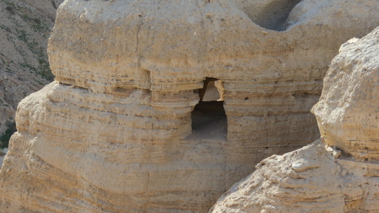

Aquellos rollos eran los primeros Manuscritos del Mar Muerto: el mayor hallazgo de textos antiguos del siglo XX. Y para esta serie sobre los libros perdidos, son el episodio central —porque Qumrán no editó, no cribó, no censuró—. Simplemente guardó, tal cual, la biblioteca de una comunidad judía, sellada durante dos mil años. Al abrirla, vimos la Escritura tal como se leía antes de que el canon se cerrara.

01Qué había en las cuevas
La primera cueva dio siete rollos; la búsqueda que siguió, casi una década (1947–1956), reveló once cuevas con los restos de unos 900 manuscritos, la mayoría en fragmentos. Databan de un arco amplio: del siglo III a.C. al 68 d.C., cuando la comunidad escondió su biblioteca ante el avance del ejército romano. El clima extremadamente seco del desierto actuó como una cápsula del tiempo, preservando el pergamino durante dos milenios.

02Por qué lo cambiaron todo
Antes de 1947, las copias hebreas más antiguas de la Biblia que teníamos eran medievales (el texto masorético, del siglo IX-X d.C.). Los rollos de Qumrán retrocedieron ese reloj más de mil años de un solo golpe. Y aquí llegó la gran pregunta: al comparar el Isaías de Qumrán con el masorético, mil años posterior, ¿cuánto había cambiado el texto?
La respuesta fue sorprendente en dos direcciones a la vez. Por un lado, muchos textos eran asombrosamente estables: el Isaías de Qumrán coincide casi palabra por palabra con el medieval, prueba del cuidado extraordinario de los copistas. Pero por otro, aparecieron versiones distintas de algunos libros —pasajes más largos o más cortos, variantes—, mostrando que en aquella época circulaban varias formas del mismo texto a la vez. La Biblia todavía no era un objeto único y fijo: era un texto vivo y plural.
Qumrán nos dio la Biblia mil años más antigua de lo que teníamos. Y reveló dos cosas: que los copistas fueron increíblemente fieles con muchos textos, pero que en aquel tiempo aún convivían varias versiones de algunos libros. El texto sagrado todavía se estaba asentando.
03La foto de un mundo antes de la criba
Aquí Qumrán conecta con toda esta serie. En la biblioteca de aquella comunidad, los libros bíblicos y los “apócrifos” convivían en el mismo estante, sin una frontera nítida. Enoc y Jubileos estaban junto a Isaías y los Salmos. Para los habitantes de Qumrán, la línea entre “canónico” y “no canónico” —que a nosotros nos parece obvia— simplemente no estaba trazada aún con claridad.
Es la confirmación material de lo que vimos en la primera entrega: el canon fue una criba gradual. Qumrán nos da la fotografía de un momento anterior a que esa criba terminara —una instantánea del judaísmo del Segundo Templo con toda su diversidad textual intacta, antes de que el tiempo y las comunidades cerraran la lista.
04Síntesis
Los Manuscritos del Mar Muerto son el testigo más elocuente de esta serie porque no son un texto sobre la Biblia, sino la Biblia misma congelada en un instante de su formación. Nos muestran un momento en que lo sagrado todavía era plural: varias versiones, varios libros, una frontera aún sin dibujar.
Por una casualidad —una cabra perdida, una piedra, una vasija— recuperamos la biblioteca que el tiempo había sellado, y con ella la prueba de que la Biblia que hoy damos por fija fue, durante siglos, un texto en movimiento. Nos queda un último territorio de libros perdidos, esta vez del lado cristiano: los evangelios que no entraron.
Nota sobre el rigor y las fuentes
El descubrimiento (1947), el número de cuevas (11) y manuscritos (~900), la datación (s. III a.C.–68 d.C.), la ausencia de Ester y el Gran Rollo de Isaías son datos establecidos. La atribución de la comunidad a los esenios es la hipótesis mayoritaria, aunque no unánime —algunos estudiosos proponen otros orígenes—; se ha señalado como “muy probablemente”.
Matiz importante: la idea de que Qumrán prueba un texto bíblico “fluido” debe equilibrarse con la evidencia de gran estabilidad en muchos manuscritos. Se han presentado ambas caras. Referencias: Emanuel Tov (crítica textual) y las ediciones oficiales de los Discoveries in the Judaean Desert.
Este artículo describe historia de los textos y no emite juicio sobre la inspiración de ninguno.